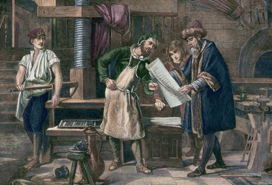
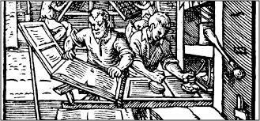

Gutenberg's early printing process, and what tests he may have made with movable type, are not known in great detail. His later Bibles were printed in such a way as to have required large quantities of type, some estimates suggesting as many as 100,000 individual sorts. Setting each page would take, perhaps, half a day, and considering all the work in loading the press, inking the type, pulling the impressions, hanging up the sheets, distributing the type, etc., it is thought that the Gutenberg–Fust shop might have employed as many as 25 craftsmen.Gutenberg's technique of making movable type remains unclear. In the following decades, punches and copper matrices became standardized in the rapidly disseminating printing presses across Europe. Whether Gutenberg used this sophisticated technique or a somewhat primitive version has been the subject of considerable debate.
IGutenberg's technique of making movable type remains unclear. In the following decades, punches and copper matrices became standardized in the rapidly disseminating printing presses across Europe. Whether Gutenberg used this sophisticated technique or a somewhat primitive version has been the subject of considerable debate.In the standard process of making type, a hard metal punch (made by punchcutting, with the letter carved back to front) is hammered into a softer copper bar, creating a matrix. This is then placed into a hand-held mould and a piece of type, or "sort", is cast by filling the mold fwith molten type-metal; this cools almost at once, and the resulting piece of type can be removed from the mould. The matrix can be reused to create hundreds, or thousands, of identical sorts so that the same character appearing anywhere within the book will appear very uniform, giving rise, over time, to the development of distinct styles of typefaces or fonts. After casting, the sorts are arranged into type-cases, and used to make up pages which are inked and printed, a procedure which can be repeated hundreds, or thousands, of times. The sorts can be reused in any combination, earning the process the name of "movable type".
Between 1450 and 1455, Gutenberg printed several texts, some of which remain unidentified; his texts did not bear the printer's name or date, so attribution is possible only from typographical evidence and external references. Certainly several church documents including a papal letter and two indulgences were printed, one of which was issued in Mainz. Realizing the value of printing in quantity, seven editions in two styles were ordered, resulting in several thousand copies being printed. Some printed editions of Ars Minor, a schoolbook on Latin grammar by Aelius Donatus may have been printed by Gutenberg; these have been dated either 1451–52 or 1455.